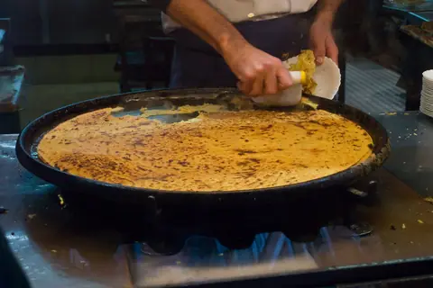
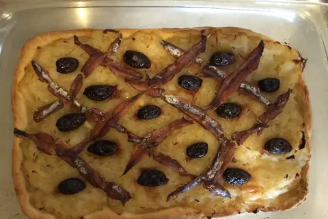

먹거리
무엇을 먹고 어디서 살 것인가
지역 음식과 시장 대표 이미지


음식·시장·카페·생활체험
- 니스 요리의 문법: 500년간 이어진 사보이 통치의 영향으로 파스타·올리브 오일 같은 이탈리아계 식재료가 프랑스 식문화와 섞여 있다.
- 반드시 먹을 세 가지:
- Socca (소카): 병아리콩 가루로 만든 부드럽고 바삭한 갈레트로, 화덕에서 나오자마자 손으로 찢어 후추를 뿌려 로제 와인과 함께 먹는다. (Chez Pipo, 셰 테레자 추천)
- Pissaladière (피살라디에르): 두툼한 빵 반죽 위에 캐러멜라이즈한 양파, 안초비, 블랙 올리브를 올린 타르트다. 페이스트리 도우는 피하는 것이 현지식이다.
- Salade Niçoise (니수아즈 샐러드): 익힌 감자나 그린빈 없이 오직 토마토, 피망, 오이 등 생채소와 참치, 안초비, 올리브, 달걀만 들어가는 것이 정본이다. 감자가 들어가면 관광객용 변형이다.
- 식당 전략:
- Acchiardo: Vieux Nice의 오랜 가족식당으로 Petits Farcis(속을 채운 채소 구이)와 소고기 스튜 라비올리가 잘 알려져 있다. 영업은 월–금만 영업 — 휴무 토·일 라 주말 저녁에는 쓸 수 없다.
- La Table Alziari: 올리브유와 제철 생선 요리 (€35–55, 권장). 속 편한 저녁을 원할 때 알맞다.